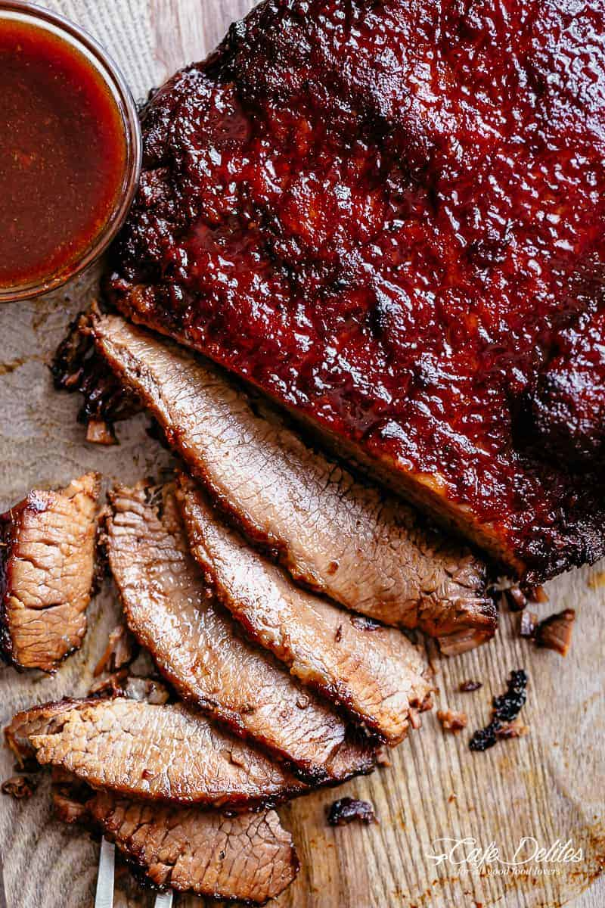

Home
Brisket Recipe
Original recipe by Karina

Description
Juicy, fall-apart Beef Brisket cooked low and slow in a rich, garlicky barbecue sauce with just the right touch of heat. Rubbed with a flavorful spice mix and smothered in a homemade BBQ sauce, it’s everything you crave when you’re learning how to cook brisket the easy way.
Ingredients
- 4 lbs of brisket
- garlic powder
- paprika
- cumin
- cayenne
- any of your favorite BBQ squce mixed with garlic, brown sugar, worcestershire, and olive oil
Steps
- Prep Brisket: Spray the inside of a 6-quart slow cooker with cooking spray. Place the brisket inside the bowl and set aside.
- Season: In a bowl, combine all the dry seasoning. Drizzle the brisket with olive oil, then rub the seasoning all over the meat.
- Make Sauce: Whisk together all the sauce ingredients. Pour half over the brisket and refrigerate the rest to use later.
- Slow Cook: Cover and cook on low for 8–10 hours or high for 4–5 hours, until the brisket is tender. Transfer to a foil-lined baking tray.
- Broil: Mix 1/4 cup of slow cooker juices into the sauce, then baste and broil at 400°F (220°C). Baste again and broil until crisp.
- Rest and Serve: Let brisket rest for 10 minutes before slicing thinly across the grain. Serve with the reserved barbecue sauce.